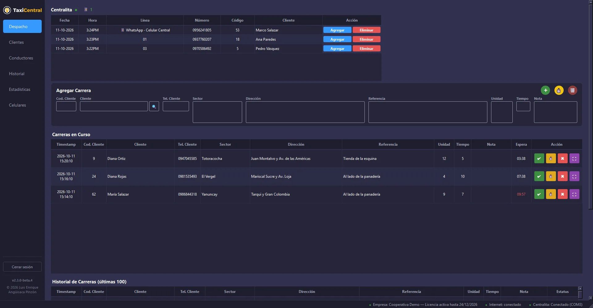
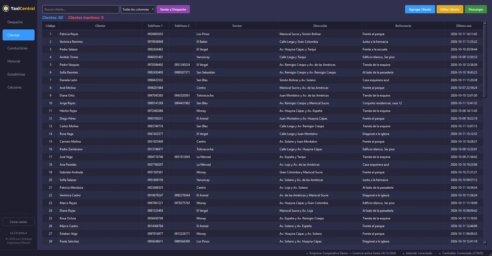
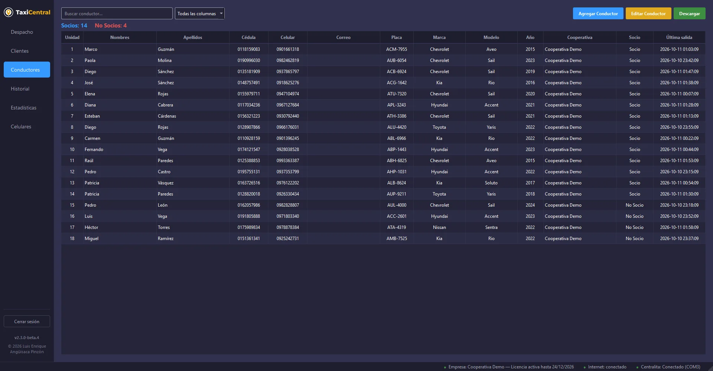
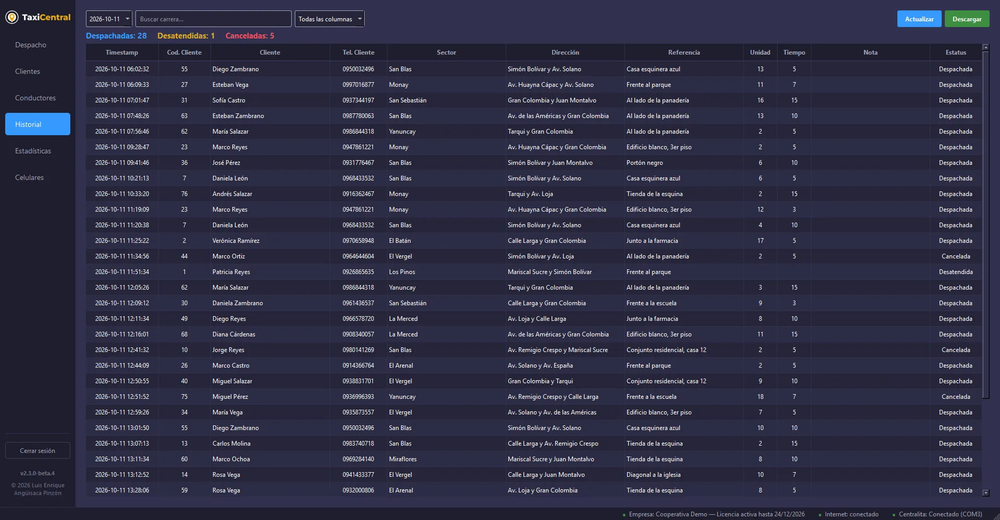
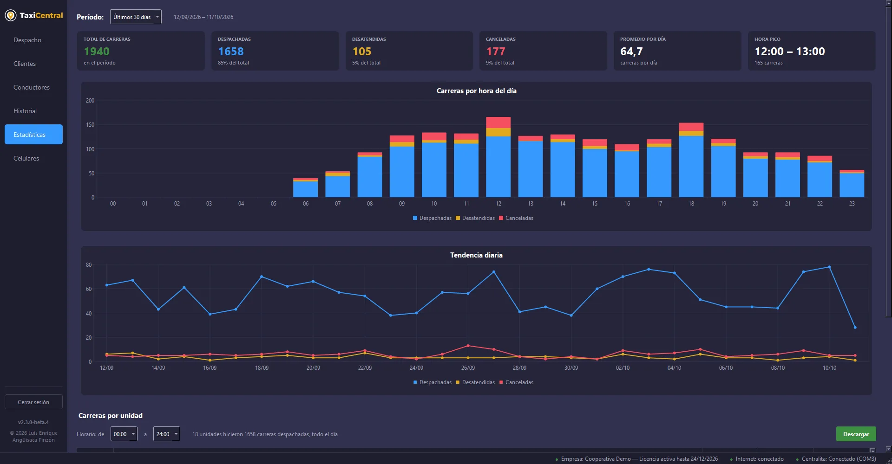
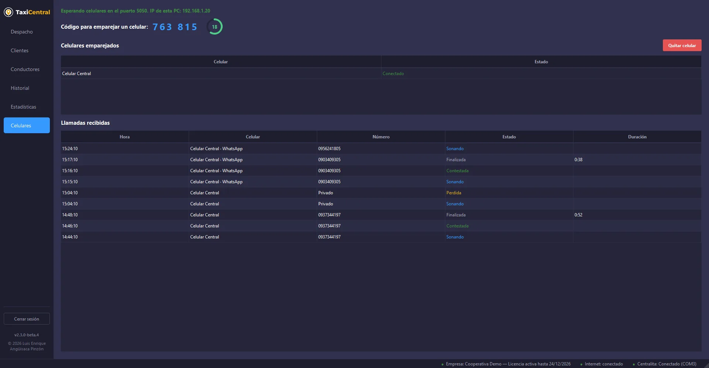

Centralita telefónica
La centralita se conecta a la computadora con un cable USB-serial. TaxiCentral lee el número de cada llamada que entra y en qué línea suena.
Si se desconecta el cable, vuelve a conectarse sola.
TaxiCentral es el programa de despacho para tu central: recibe las llamadas de la centralita y del celular, busca al cliente por su número, elige entre las unidades disponibles la que más tiempo lleva esperando y guarda cada carrera.

Desde la llamada hasta las estadísticas del mes, sin cuadernos ni hojas sueltas.
Cada llamada que entra aparece al instante con el número, el código y el nombre del cliente.
La ficha de cada cliente: dos teléfonos, sector, dirección y referencia.

Cada unidad con los datos del conductor y del vehículo.

Todas las carreras de cualquier día, con su estado.

Cómo trabaja tu central, de un vistazo.

Conecta el celular de la central con TaxiCentral Móvil.

Usa una, la otra o las dos a la vez: todas llegan a la misma pantalla de Despacho.
La centralita se conecta a la computadora con un cable USB-serial. TaxiCentral lee el número de cada llamada que entra y en qué línea suena.
Si se desconecta el cable, vuelve a conectarse sola.
Con la app TaxiCentral Móvil, las llamadas que entran al celular, normales y de WhatsApp, llegan a la computadora por el Wi‑Fi de la central.
Los datos viajan directo del celular a la PC, sin pasar por internet.
App para Android 10 o superior
Funciona en la computadora que ya tiene tu central.
TaxiCentral se usa con una licencia por empresa: cada central recibe una clave para activarlo en sus computadoras.
Escríbenos y te contamos los planes o coordinamos una demostración.